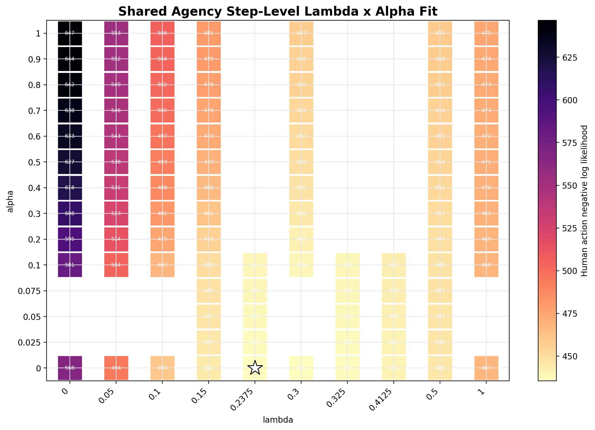
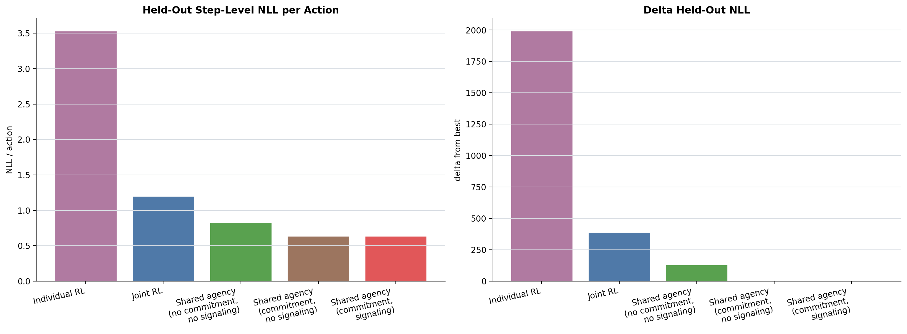
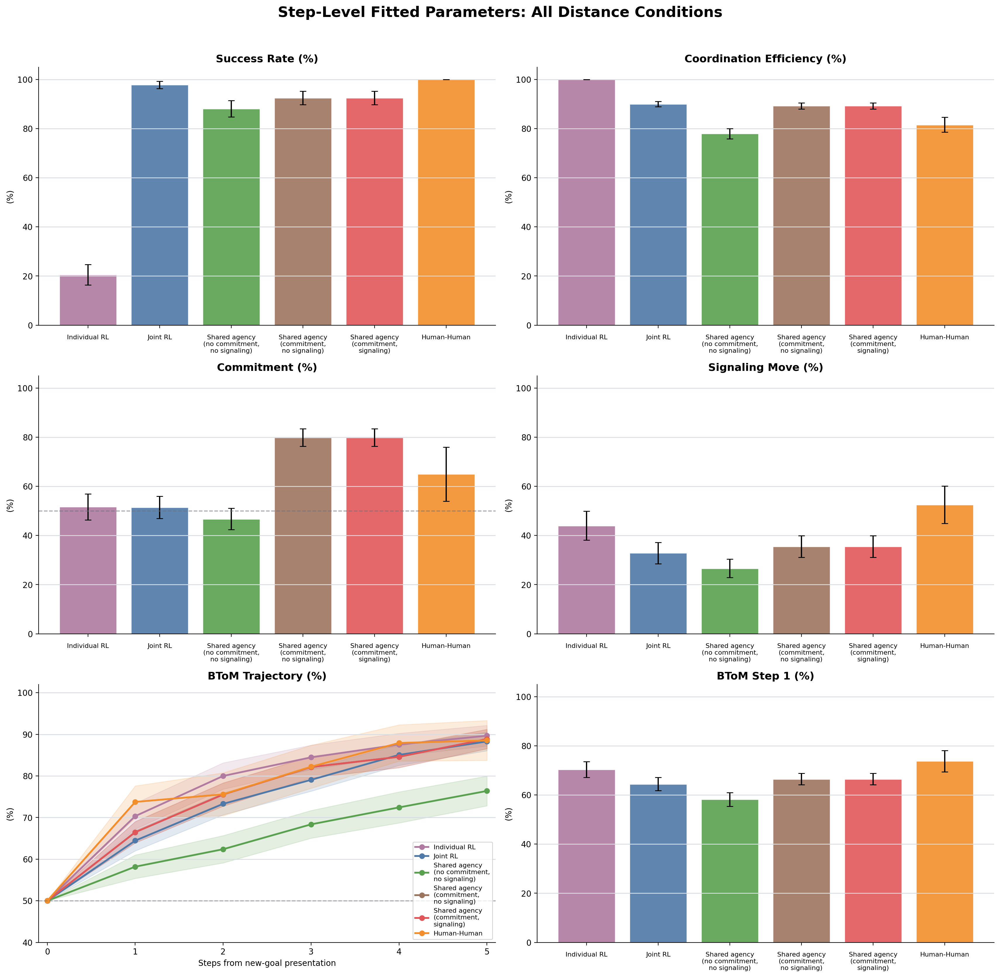
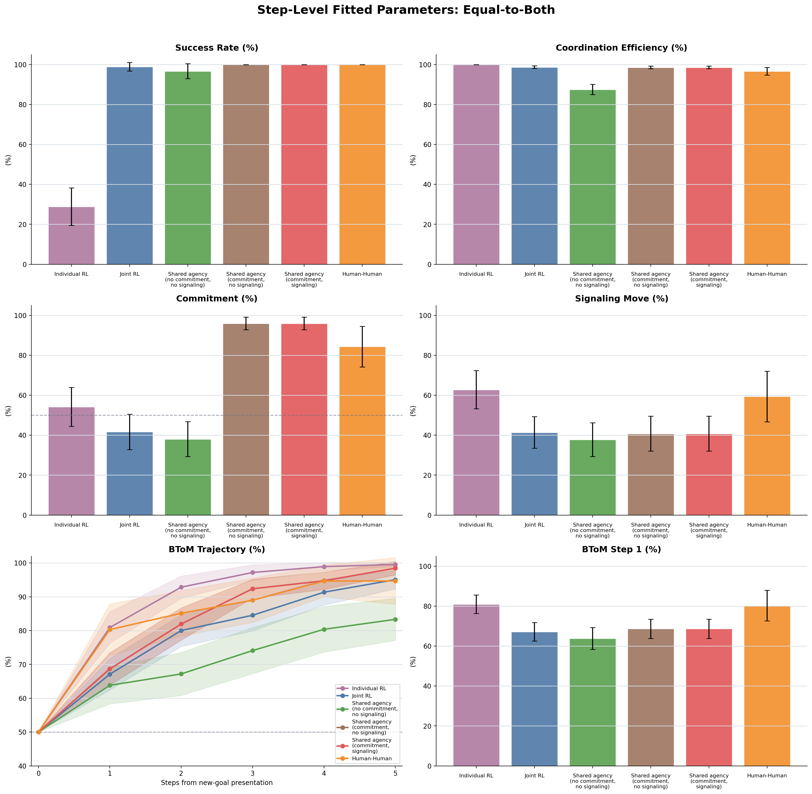
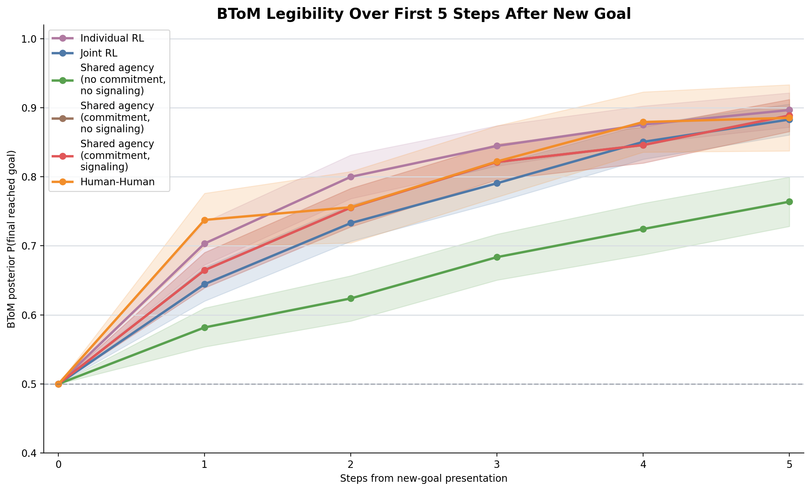

Primary Signal-Window Model Comparison
The fit uses 688 player-actions from post-new-goal relative steps 1, 2, and 3. Held-out folds are grouped by room ID.
| model | lambda | alpha | n_params | actions | in_sample_nll | heldout_nll | heldout_nll_per_action | delta_heldout_nll | aic | bic |
|---|---|---|---|---|---|---|---|---|---|---|
| Shared agency commitment no signaling | 0.24 | 0.00 | 1 | 688 | 435.534 | 437.669 | 0.636 | 0.000 | 873.07 | 877.60 |
| Shared agency commitment signaling | 0.24 | 0.00 | 2 | 688 | 435.534 | 437.669 | 0.636 | 0.000 | 875.07 | 884.14 |
| Shared agency no commitment no signaling | 0.00 | 0.00 | 0 | 688 | 567.505 | 567.505 | 0.825 | 129.837 | 1135.01 | 1135.01 |
| Joint RL | nan | nan | 0 | 688 | 827.107 | 827.107 | 1.202 | 389.438 | 1654.21 | 1654.21 |
| Individual RL | nan | nan | 0 | 688 | 2431.148 | 2431.148 | 3.534 | 1993.479 | 4862.30 | 4862.30 |
Shared-Agency Lambda x Alpha Signal-Window Fit
Full-data best pair: lambda=0.2375, alpha=0, signal-window NLL=435.53.

Held-Out Signal-Window NLL Plot

Posterior Predictive Checks: All Distance Conditions

Posterior Predictive Checks: Equal-to-Both

BToM Trajectory

Trial-Level Best vs Signal-Window Best
| fit_source | lambda | alpha | human_step_level_nll | average_commitment_percent | average_signaling_percent | equal_commitment_percent | equal_signaling_percent |
|---|---|---|---|---|---|---|---|
| trial-level commitment+signaling NLL | 0.15 | 0.50 | 469.945 | 67.68 | 39.96 | 77.78 | 51.39 |
| signal-window human action NLL | 0.24 | 0.00 | 435.534 | 79.85 | 35.49 | 95.98 | 40.80 |
Raw Sources
| model | lambda | alpha | rawTrialsPath |
|---|---|---|---|
| Individual RL | nan | nan | /Users/chengshaozhe/Documents/DukeECClab/code/multiplePlayerGridGame_socketIO/dataAnalysis/raw_data/model_model_simulations/joint_rl/shared_agency_signal_window_model_comparison/individual_rl/joint_rl_vs_joint_rl_2p3g_raw_trials_individual_sessions_0_to_29.json.zst |
| Joint RL | nan | nan | /Users/chengshaozhe/Documents/DukeECClab/code/multiplePlayerGridGame_socketIO/dataAnalysis/raw_data/model_model_simulations/joint_rl/shared_agency_signal_window_model_comparison/joint_rl/joint_rl_vs_joint_rl_2p3g_raw_trials_unshaped_sessions_0_to_29.json.zst |
| Shared agency no commitment no signaling | 0.00 | 0.00 | /Users/chengshaozhe/Documents/DukeECClab/code/multiplePlayerGridGame_socketIO/dataAnalysis/raw_data/model_model_simulations/joint_rl/shared_agency_signal_window_model_comparison/shared_agency_no_commitment_no_signaling/always_signal_vs_always_signal_2p3g_raw_trials_beta_3_lambda_0_alpha_0_sessions_0_to_29.json.zst |
| Shared agency commitment no signaling | 0.24 | 0.00 | /Users/chengshaozhe/Documents/DukeECClab/code/multiplePlayerGridGame_socketIO/dataAnalysis/raw_data/model_model_simulations/joint_rl/shared_agency_signal_window_model_comparison/shared_agency_commitment_no_signaling/always_signal_vs_always_signal_2p3g_raw_trials_beta_3_lambda_0p2375_alpha_0_sessions_0_to_29.json.zst |
| Shared agency commitment signaling | 0.24 | 0.00 | /Users/chengshaozhe/Documents/DukeECClab/code/multiplePlayerGridGame_socketIO/dataAnalysis/raw_data/model_model_simulations/joint_rl/shared_agency_signal_window_model_comparison/shared_agency_commitment_signaling/always_signal_vs_always_signal_2p3g_raw_trials_beta_3_lambda_0p2375_alpha_0_sessions_0_to_29.json.zst |